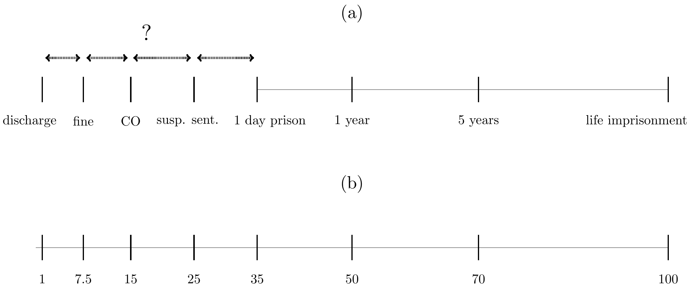
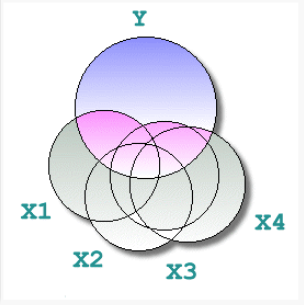

Introducción al estudio cuantitativo del “sentencing”
(imposición de penas)
Jose Pina-Sánchez
Delimitando objetivos
Múltiples preguntas de investigación
– ¿Cuál es el grado de consistencia entre juzgados?
– ¿Cuál es el nivel de punitividad/proporcionalidad/ individualización en el sistema?
– ¿Existe discriminación por razones de raza?
– ¿Cuál ha sido el efecto de la última ley orgánica?
Múltiples diseños de estudio
– ¿Experimental u observacional?
– ¿Longitudinal o de sección cruzada?
Delimitando objetivos
Múltiples métodos de recogida de datos
– observaciones en juzgados
– datos de la administración (e.g. Data First)
– encuestas a jueces (e.g. Crown Court Sentencing Survey)
– revisión de sentencias (e.g. CENDOJ)
Pregunta: Cuáles son los pros y contras de cada método?
En este mini-curso: datos de sección cruzada para estimar el efecto de factores (legales y extra-legales) en la punitivad
Aproximación a nivel conceptual
Buscamos estimar el efecto causal de un factor de interés en la severidad de las penas impuestas
– ¿En qué medida la declaración de culpabilidad reduce la pena?
– ¿Qué peso se le da al historial delictivo del acusado?
– ¿Existe discriminación judicial por razones de aporofobia?
– ¿Se aplica el mitigante por arrepentimiento de manera diferente según el sexo del delincuente?
¿Problemas?
No existe un indicador de la severidad de las penas
Sesgo de confusión
– la correlación de interés puede ser espúrea (causada por un tercer factor)
Otros: sesgo de postratamiento, datos ausentes, errores de medida, etc.
Operacionalizar la severidad
Diferentes tipos de sentencias basados en diferentes medidas
– multa (€), sanción comunitaria (condiciones), prisión (meses)
Escalas (subjetivas) de severidad (Pina-Sánchez & Gosling, 2020)

Operacionalizar la severidad
Opciones menos complejas
– binaria: prisión o no
– duración de las penas de prisión
Pregunta: Cuáles son las ventajas e inconvenientes?
– ¿Cuál es el problema de basarnos en la duración de las penas de prisión?
– ¿Cuál es el problema de usar medidas de severidad simples en lugar de una escala de severidad?
Sesgo de confusión

Necesitamos controlar por otras caractéristicas del caso
– métodos de emparejamiento
– métodos de regresión
Modelos de regresión
- Correlación entre dos variables controlando por otras variables

\[Y_i=\beta_0+\beta_1X_{1,i}+\beta_{k}X_{k,i}+\epsilon_i\]
Aplicar controles de manera crítica

No es buena idea controlar por todas las caráctesticas del caso
No podemos estimar con exactitud el nivel de discriminación (Pina-Sánchez et al., 2025)
Tests de robustez
Supuesto de normalidad
– análisis de residuos
Datos ausentes
– imputación múltiple (Van Buuren, 2018)
Variables perfectamente medidas
– SIMEX (Cook & Stefanski, 1994)
Sesgo de confusión
– Robustness value (Cinelli & Hazlett, 2020)
Práctica en R
Descargar e instalar R y Rstudio
– en ese orden
Descargar el archivo de datos ‘Main dataset’
– tomad nota de la dirección de la carpeta donde se descarga
Pregunta de investigación
– ¿Existe discriminación por género?